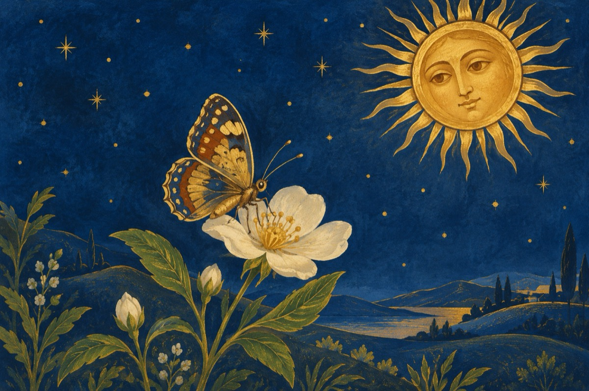

Totul a înverzit
Un fluturaș în limba lui maternă
Grăbit ne face semn din aripioare
Că-i timpul să ieșim cu toții la lumină
Să ne-ncălzească sfântul nostru soare!
Și-ncet, încet pe-o floare își așează zborul,
Albinele în crâng au dat năvală,
Strângând cu grijă de pe flori nectarul.
E semn că a venit frumoasa primăvară!
Pițigoiul ce poartă grijile-n agricultură
Scăpat din al iernii jug
Își scoate trilurile din cioc ca urătură
Și-ndeamnă gospodarii țării; la plug, la plug!
Cucul sosit-a în zăvoi și iată,
Fiind de oameni numărat,
Și mai ales cântând din față,
Anunță la anii tăi de viață,
Câți ani ți-a mai adăugat!
Iar pupăza grăbită să se-audă
Ne-ndeamnă să ne spălăm pe mâini, pe față
Și cântă dis de dimineață, cântă
Să ne ferim de COVID-19, ca să scăpăm cu viață!
Vasile Groza